Ejercicios de vectores
1Dado el vector  = (2, −1), determinar dos vectores equipolentes a
= (2, −1), determinar dos vectores equipolentes a  , 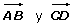, sabiendo que A(1, −3) y D(2, 0).
, 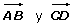, sabiendo que A(1, −3) y D(2, 0).
2 Calcula el valor de k sabiendo que el módulo del vector = (k, 3) es 5.
3 Si es un vector de componentes (3, 4), hallar un vector unitario de su misma dirección y sentido.
4Dados los vértices de un triángulo A(1, 2), B(−3, 4) y C(−1, 3), hallar las coordenadas del baricentro.
5Hallar las coordenadas del punto C, sabiendo que B(2, −2) es el punto medio de AC, A(−3, 1).
6Averiguar si están alineados los puntos: A(−2, −3), B(1, 0) y C(6, 5).
7Calcula las coordenadas de D para que el cuadrilátero de vértices: A(−1, −2), B(4, −1), C(5, 2) y D; sea un paralelogramo.
8Las coordenadas de los extremos del segmento AB son: A (2, −1) y B(8, −4). Hallar las coordenadas del punto C que divide al segmento AB en dos partes tales que AC es la mitad de CB.
9Si el segmento AB de extremos A(1, 3), B(7, 5), se divide en cuatro partes iguales, ¿cuáles son las coordenadas de los puntos de división?
10Hallar el simétrico del punto A(4, −2) respecto de M(2, 6).
- 1
- 2
- 3
- 4
- 5
- 6
- 7
- 8
- 9
- 10
Ejercicio 1 resuelto
Dado el vector  = (2, −1), determinar dos vectores equipolentes a
= (2, −1), determinar dos vectores equipolentes a  , , sabiendo que A(1, −3) y D(2, 0).
, , sabiendo que A(1, −3) y D(2, 0).

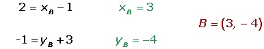
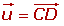
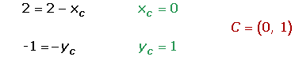
Ejercicio 2 resuelto
Calcula el valor de k sabiendo que el módulo del vector = (k, 3) es 5.
Ejercicio 3 resuelto
Si es un vector de componentes (3, 4), hallar un vector unitario de su misma dirección y sentido.
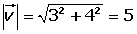
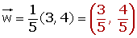
Ejercicio 4 resuelto
Dados los vértices de un triángulo A(1, 2), B(−3, 4) y C(−1, 3), hallar las coordenadas del baricentro.
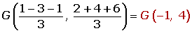
Ejercicio 5 resuelto
Hallar las coordenadas del punto C, sabiendo que B(2, −2) es el punto medio de AC, A(−3, 1).
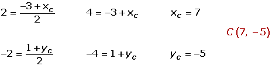
Ejercicio 6 resuelto
Averiguar si están alineados los puntos: A(−2, −3), B(1, 0) y C(6, 5).
Ejercicio 7 resuelto
Calcula las coordenadas de D para que el cuadrilátero de vértices: A(−1, −2), B(4, −1), C(5, 2) y D; sea un paralelogramo.

Ejercicio 8 resuelto
Las coordenadas de los extremos del segmento AB son: A (2, −1) y B(8, −4). Hallar las coordenadas del punto C que divide al segmento AB en dos partes tales que AC es la mitad de CB.
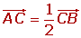
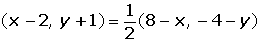
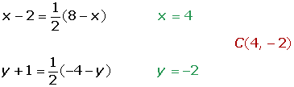
Ejercicio 9 resuelto
Si el segmento AB de extremos A(1, 3), B(7, 5), se divide en cuatro partes iguales, ¿cuáles son las coordenadas de los puntos de división?
Ejercicio 10 resuelto
Hallar el simétrico del punto A(4, −2) respecto de M(2, 6).
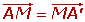
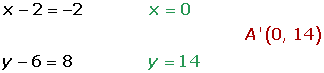
 Ejercicios
Ejercicios